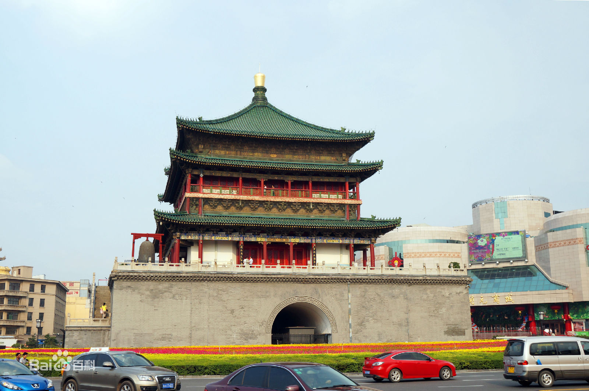

西安钟楼

- 
西安钟楼位于西安市中心，明城墙内东西南北四条大街的交汇处，是中国现存钟楼中形制最大、保存最完整的一座。建于明太祖洪武十七年（1384年），初建于今广济街口，与鼓楼相对，明神宗万历十年（1582年）整体迁移于今址。 钟楼建在方型基座之上，为砖木结构，重楼三层檐，四角攒顶的形式，总高36米，占地面积1377平方米。 1956年8月6日，陕西省人民委员会公布钟楼为省级文物保护单位。1996年11月20日，西安钟楼被国务院公布为全国重点文物保护单位。
西安钟楼位于西安市中心，明城墙内东西南北四条大街的交汇处，是中国现存钟楼中形制最大、保存最完整的一座。建于明太祖洪武十七年（1384年），初建于今广济街口，与鼓楼相对，明神宗万历十年（1582年）整体迁移于今址。 钟楼建在方型基座之上，为砖木结构，重楼三层檐，四角攒顶的形式，总高36米，占地面积1377平方米。 1956年8月6日，陕西省人民委员会公布钟楼为省级文物保护单位。1996年11月20日，西安钟楼被国务院公布为全国重点文物保护单位。